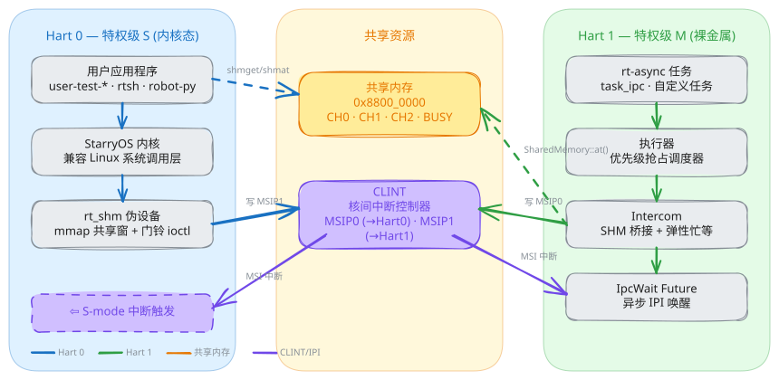
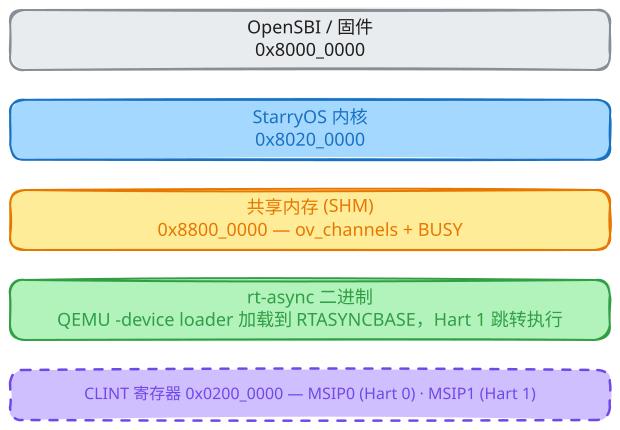
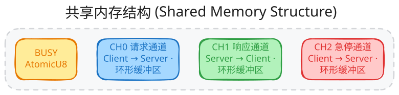
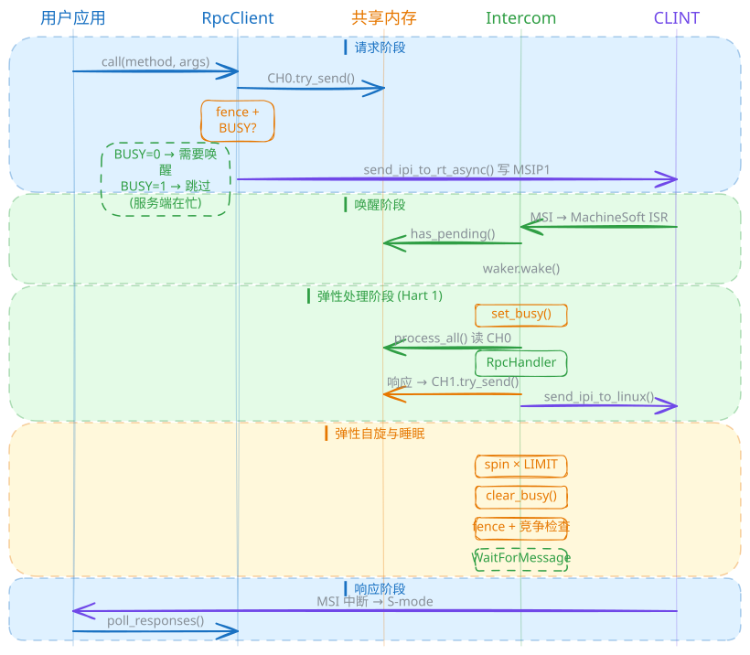
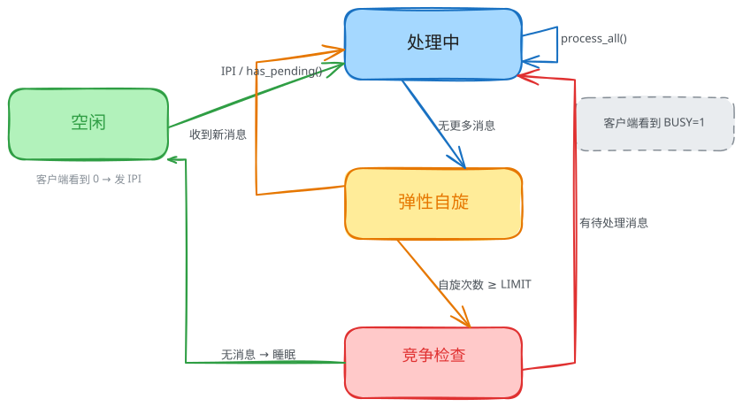
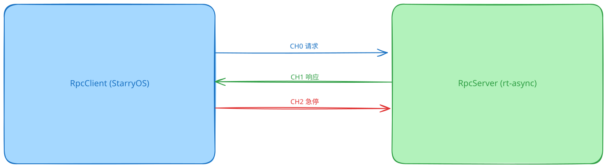
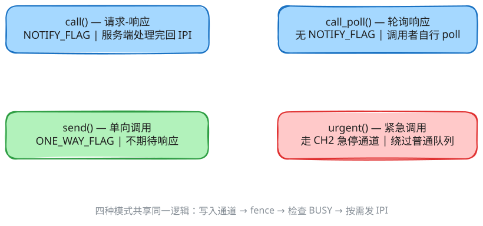
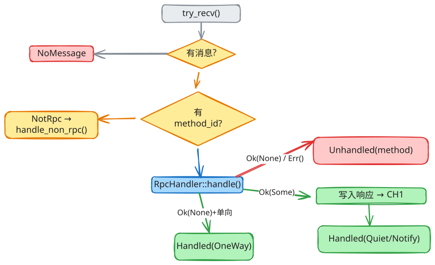
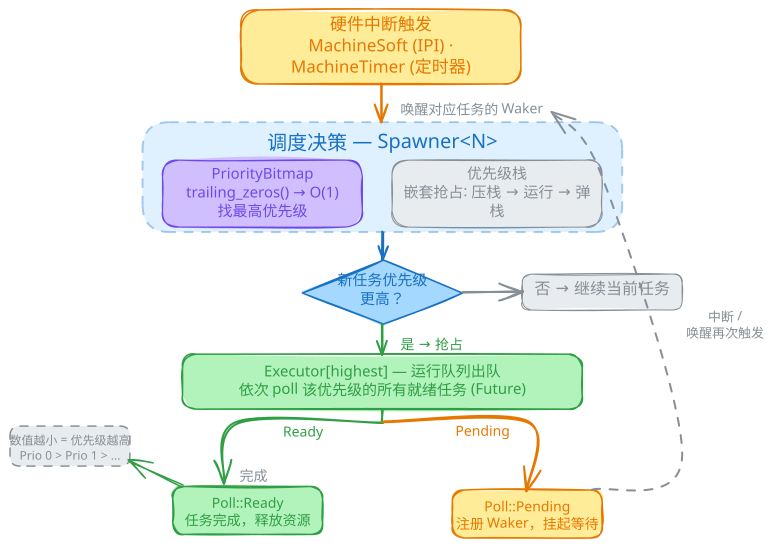
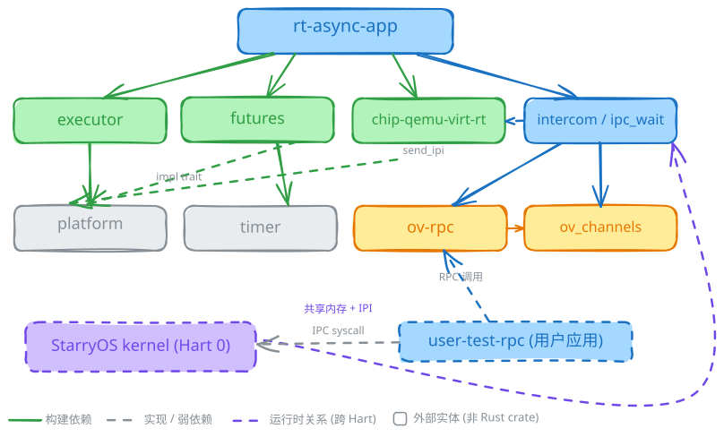

rt-async-amp 架构文档
RISC-V 非对称多处理 (AMP) 系统 — 双核实时 + 通用 OS，运行在 QEMU virt 平台
1. 系统架构总览
系统运行在 QEMU virt RISC-V 平台上，两个硬件线程 (hart) 各自运行不同的软件栈。

核心思想
- Hart 0 运行完整操作系统 (StarryOS)，支持 Linux 系统调用、文件系统、用户进程等。
- Hart 1 运行裸金属异步执行器 (rt-async)，具有确定性实时调度能力，无操作系统。
- 两者仅通过共享内存通道进行数据交换，通过 IPI（核间中断）互相通知。
2. 内存布局

共享内存 (SHM) 内部结构

BUSY标志 — 原子字节；1 = rt-async 正在处理中，0 = 睡眠/空闲。- 每个通道是一个无锁的单生产者 / 单消费者环形缓冲区。
- 方向约定："客户端"指 StarryOS 用户应用侧；"服务端"指 rt-async 侧。
3. 通讯全流程
从 StarryOS 用户应用发起 RPC 调用到 rt-async 处理并返回结果的端到端流程：

流程概述
- 请求发起：用户应用序列化参数 → 写入 CH0 → 检查 BUSY 标志 → 若空闲则发送 IPI。
- 唤醒：CLINT MSI 中断触发 Hart 1 的 MachineSoft 中断处理 → waker 唤醒 IPC 任务。
- 处理：
process_elastic()设置 BUSY，从 CH0 读取所有请求，分发给 RPC handler，将响应写入 CH1，回复 IPI。 - 弹性自旋：处理完毕后短暂自旋 (ELASTIC_SPIN_LIMIT 次迭代) 等待更多工作。
- 睡眠：清除 BUSY，执行最终竞争检查，然后 await
WaitForMessage（挂起直到下一次 IPI）。 - 响应接收：用户应用收到 IPI → 轮询 CH1 → 反序列化响应。
4. SHM 与通道状态机
4.1 BUSY 标志状态机
BUSY 标志协调两个核心之间"服务端是否在忙碌"的判断，避免不必要的中断：

4.2 通道消息状态
- 每个通道槽位循环：空 → 已写入 → 已读取 → 回收为空。
- 缓冲区满时，
try_send()返回SendError::Full。
4.3 防丢失唤醒协议
关键竞争条件：如果客户端正在写入请求的瞬间，服务端正好在清除 BUSY 准备睡眠，怎么办？
解决方案（双屏障协议）：
解决方案（双屏障协议）：
- 客户端侧：写入 CH0 后 →
fence(SeqCst)→ 读取 BUSY。若 BUSY=0，发送 IPI。 - 服务端侧：清除 BUSY 后 →
fence(SeqCst)→ 重新检查has_pending()。若有新请求，立即处理。 - 两侧的
SeqCst内存屏障保证至少一方能看到另一方的写入 — 请求不会丢失。
5. RPC 协议
5.1 通道布局

5.2 四种调用模式

5.3 消息格式
通道中的每条 Message 包含：
type—Request、Response、Notification、Datarequest_id— 唯一请求 ID，匹配请求与响应method_id— 方法标识，高位编码标志 (NOTIFY_FLAG, ONE_WAY_FLAG)payload— 序列化参数/响应 (bincode)
5.4 ProcessResult 分发流程

6. rt-async 执行器
实时执行器运行在 Hart 1 的 M 特权级，采用优先级抢占调度策略：

任务状态机
优先级抢占机制
- 数值越小 = 优先级越高（优先级 0 为最高）。
Spawner::spawn()检查新任务优先级是否高于当前 → 触发platform::pend()（软件中断）。try_preempt()使用优先级栈追踪嵌套抢占 — 每次抢占压栈，完成时弹出。PriorityBitmap通过trailing_zeros()实现 O(1)highest()— 快速找到有工作的最高优先级执行器。
7. 模块地图
rt-async-amp/
├── apps/
│ └── rt-async-app/ ← Hart 1 固件 (M 特权级)
│ └── src/
│ ├── bin/demo.rs ← 入口: __rust_main → spawn 任务
│ ├── intercom.rs ← SHM 桥接: init, process_elastic, send_message
│ ├── ipc_wait.rs ← WaitForMessage future + ISR 通知
│ └── lib.rs
├── modules/
│ ├── ov-rpc/ ← RPC 框架 (RpcClient / RpcServer)
│ │ └── src/
│ │ ├── client.rs ← RpcClient: call, call_poll, send, urgent
│ │ ├── server.rs ← RpcServer: process_channel, process_all
│ │ └── lib.rs ← define_service!, define_service_client! 宏
│ └── chip-qemu-virt-rt/ ← Hart 1 硬件抽象层
│ └── src/
│ └── lib.rs ← send_ipi_to_linux, SHMBASE, CLINT 操作
├── rt-async/ ← 异步执行器库
│ └── modules/
│ ├── executor/ ← 优先级抢占异步执行器
│ │ └── src/
│ │ ├── executor.rs ← Executor: 运行队列, poll 循环
│ │ ├── spawner.rs ← Spawner: spawn, try_preempt, run
│ │ ├── priority.rs ← Priority 类型（值越小优先级越高）
│ │ └── task/
│ │ ├── state.rs ← 任务状态: SPAWNED, RUN_QUEUED 原子位
│ │ ├── header.rs ← TaskInfo, TaskRef
│ │ └── storage.rs ← TaskStorage: 静态任务内存分配
│ ├── futures/ ← Future 工具 + 定时器
│ ├── platform/ ← Chip/TimerChip extern trait
│ └── timer/ ← Timer wheel 定时器实现
├── StarryOS/ ← Hart 0 操作系统 (S 特权级), 兼容 Linux 内核
│ └── kernel/src/
│ ├── syscall/ipc/ ← shmget/shmat/shmdt, msgsnd/msgrcv 系统调用
│ └── pseudofs/dev/ ← /dev/ipi-rt-async 设备驱动
├── user-apps/ ← StarryOS 用户态测试程序
│ ├── user-test-ipc/ ← IPC 共享内存测试
│ ├── user-test-rpc/ ← RPC 调用测试
│ └── user-test-sched/ ← 调度延迟测试
├── xtask/ ← 构建系统 (cargo xtask)
│ └── src/
│ ├── main.rs ← CLI: build, run, setup 命令
│ ├── build.rs ← 构建: rt-async, StarryOS, OpenSBI, 用户程序
│ ├── config.rs ← amp.toml 配置加载器
│ └── run.rs ← QEMU 启动（-smp 2 双核）
└── amp.toml ← 中央配置: 地址、大小、工具路径
模块依赖关系
